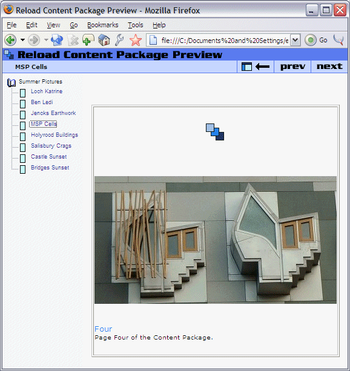
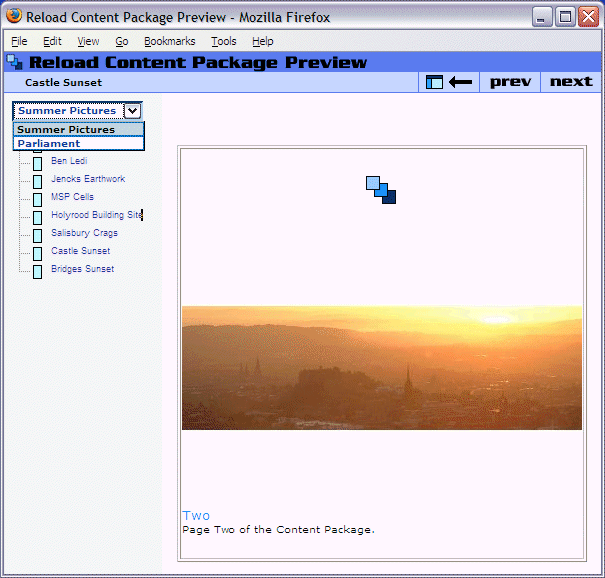

Tidy Content Package
The Content Package is now fully functional, but we may wish to tidy up the package before final export.

If you wish, you may now add further organizations (you can reuse the same content) and observe how the structure of the previewed Content Package corresponds to the Organization/Item structure you have created.
Multiple Organizations
So far, we have created relatively simple structures of content. One way to create more complex structures is to use multiple organizations. Using multiple organizations can be used to specify alternative (parallel) structures to the same material. Multiple organizations may also be used to provide alternative content for the same learning outcome.
Adding a second Organization is simple. Right-click on the organizations element and click 'Add Organization'. Type a name for the new organization in the box in the attribute pane. Add Content to the new organization by dragging it over as before. You may have to rename the Items as before to provide useful titles.
When there are multiple Organization elements present, A default should be specified. If no default is specified then the first organization in the manifest is presumed to be the default. To specify a default Organization, you should select the Organizations element, then select the appropriate Organization from the drop-down box in the Attribute pane.
When there are multiple Organizations in a Content Package, the Reload Content Previewer will display a drop down box in the left navigation frame. This drop-down box controls which Organization is displayed at any time. Other software displaying the Content Package may choose to render multiple Organizations in different ways. The screenshot below shows a second organization - 'Parliament' as well as the initial 'Summer Pictures' Organization.
